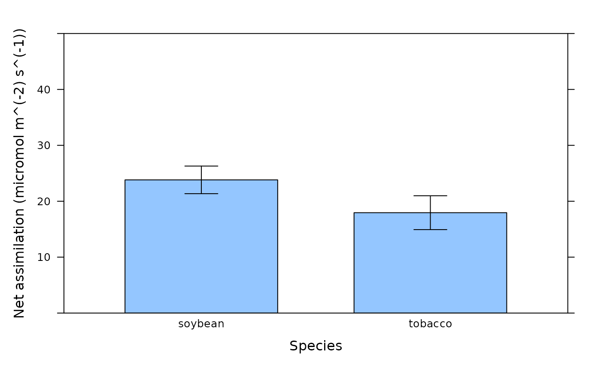
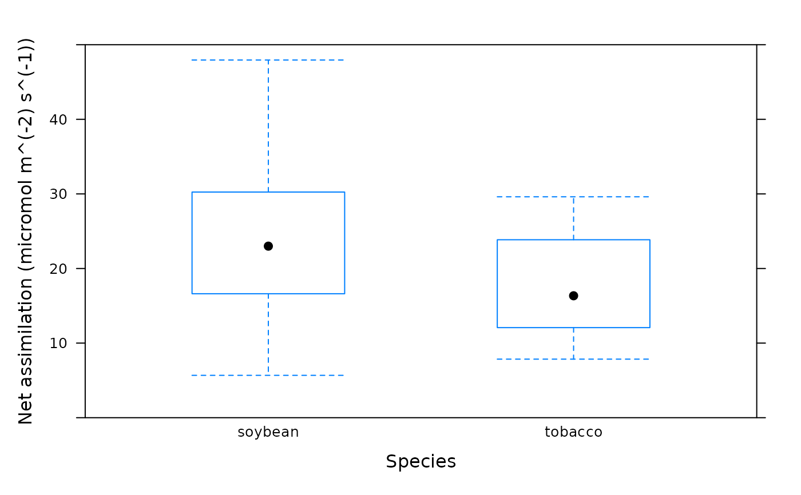

Barcharts with error bars
barchart_with_errorbars.Rdbarchart_with_errorbars is a wrapper for lattice::barchart that
includes error bars on the chart, while bwplot_wrapper is a simple
wrapper for lattice::bwplot that gives it the same function signature
as barchart_with_errorbars.
Usage
barchart_with_errorbars(
Y,
X,
eb_width = 0.2,
eb_lwd = 1,
eb_col = 'black',
na.rm = TRUE,
remove_outliers = FALSE,
...
)
bwplot_wrapper(Y, X, ...)Arguments
- Y
A numeric vector.
- X
A vector with the same length as
Ythat can be used as a factor to splitYinto one or more distinct subsets.- eb_width
The width of the error bars.
- eb_lwd
The line width (thickness) of the error bars.
- eb_col
The color of the error bars.
- na.rm
A logical value indicating whether or not to remove NA values before calculating means and standard errors.
- remove_outliers
A logical value indicating whether or not to remove outliers using
exclude_outliersbefore calculating means and standard errors.- ...
Additional arguments to be passed to
lattice::barchartorlattice::bwplot.
Details
The barchart_with_errorbars function uses tapply to
calculate the mean and standard error for each subset of Y as
determined by the values of X. In other words, means <-
tapply(Y, X, mean), and similar for the standard errors. The mean values are
represented as bars in the final plot, while the standard error is used to
create error bars located at mean +/- standard_error.
The bwplot_wrapper function is a simple wrapper for
lattice::bwplot that gives it the same input arguments as
barchart_with_errorbars. In other words, the same X and Y
vectors can be used to create a barchart using barchart_with_errorbars
or a box-whisker plot with bwplot_wrapper.
Value
A trellis object created by lattice::barchart or
lattice::bwplot.
Examples
# Read an example Licor file included in the PhotoGEA package
licor_file <- read_gasex_file(
PhotoGEA_example_file_path('ball_berry_1.xlsx')
)
# Plot the average assimilation value for each species. (Note: this is not a
# meaningful calculation since we are combining assimilation values measured
# at different PPFD.)
barchart_with_errorbars(
licor_file[, 'A'],
licor_file[, 'species'],
ylim = c(0, 50),
xlab = 'Species',
ylab = paste0('Net assimilation (', licor_file$units$A, ')')
)

# Make a box-whisker plot using the same data. (Note: this is not a meaningful
# plot since we are combining assimilation values measured at different PPFD.)
bwplot_wrapper(
licor_file[, 'A'],
licor_file[, 'species'],
ylim = c(0, 50),
xlab = 'Species',
ylab = paste0('Net assimilation (', licor_file$units$A, ')')
)

# Another way to create the plots. This method illustrates the utility of the
# bwplot_wrapper function.
plot_parameters <- list(
Y = licor_file[, 'A'],
X = licor_file[, 'species'],
ylim = c(0, 50),
xlab = 'Species',
ylab = paste0('Net assimilation (', licor_file$units$A, ')')
)
do.call(barchart_with_errorbars, plot_parameters)
do.call(bwplot_wrapper, plot_parameters)